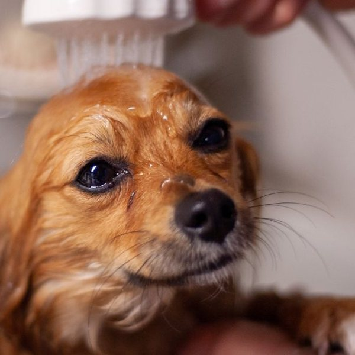

Banyo ve tarama
Tüy ve deri tipine uygun şampuanla yıkama, bol durulama, köke kadar kurutma ve tarama. Dökülen ölü tüyün alınmasına da yardım eder.
Ne zaman?Kirlendiğinde, koktuğunda ya da tüy tipine göre düzenli aralıklarla.
Bu hizmetle bilet kesKöpükten makasa, bakım masası
Banyo, tarama, tıraş, tırnak, kulak ve tüy açma. Her dostun tüyü, huyu ve ihtiyacı farklı; bu yüzden işe önce konuşarak başlıyoruz. Aşağıda işlemleri, tüy tipinize göre bir bakım rehberini ve evde işinize yarayacak küçük testleri bulacaksınız.
BANYO✱TARAMA✱FÖN✱MAKAS✱TIRNAK✱KULAK✱TÜY AÇMA✱PATİ BAKIMI✱BANYO✱TARAMA✱FÖN✱MAKAS✱TIRNAK✱KULAK✱TÜY AÇMA✱PATİ BAKIMI✱BANYO✱TARAMA✱FÖN✱MAKAS✱TIRNAK✱KULAK✱TÜY AÇMA✱PATİ BAKIMI✱
İşlemleri tek tek ya da bir arada isteyebilirsiniz. Ücret ve süre dostunuzun boyuna, tüyüne ve durumuna göre değiştiği için en doğrusu yazıp sormak.
Tüy ve deri tipine uygun şampuanla yıkama, bol durulama, köke kadar kurutma ve tarama. Dökülen ölü tüyün alınmasına da yardım eder.
Ne zaman?Kirlendiğinde, koktuğunda ya da tüy tipine göre düzenli aralıklarla.
Bu hizmetle bilet kesIrk standardına ya da sizin isteğinize göre: kısa yaz kesimi, yüz ve pati toparlama, tüm vücut düzeltme. Bir örnek fotoğraf getirmek anlaşmayı kolaylaştırır.
İpucuÇift katlı tüylerde sıfır tıraş genellikle önerilmez; nedenini aşağıdaki rehberde anlattık.
Bu hizmetle bilet kesUzamış tırnak yürüyüşü bozabilir, kıvrılıp pati yastığına batabilir. Kesim sakin ve kontrollü yapılır; koyu renk tırnaklarda azar azar.
Ne zaman?Yürürken yerden tık tık ses geliyorsa ya da dururken tırnaklar yere değiyorsa.
Bu hizmetle bilet kesKulak kepçesinin görünen kısmı ve göz çevresindeki akıntı izleri nazikçe temizlenir. Düzenli bakımın sessiz kahramanı.
DikkatKızarıklık, kötü koku, akıntı ya da sık kafa sallama varsa önce veteriner hekiminize danışın.
Bu hizmetle bilet kesKeçeleşmiş tüyler uygun tarak ve ürünlerle açılmaya çalışılır. Deriye yapışmış ağır keçede dostunuzun rahatı için kısa kesim önerilebilir.
Ne zaman?Tarak deriye inmeden takılıyorsa. Emin değilseniz aşağıdaki tarak testini yapın.
Bu hizmetle bilet kesPati arasındaki uzun tüyler kaymaya, kir ve nem tutmaya yol açabilir. Pati altı ve hijyen bölgesinin kısaltılmasını sorun, bilgi verelim.
İpucuYağmurlu yürüyüşlerden sonra pati aralarını kurulamak kokuyu ve tahrişi azaltır.
Bu hizmetle bilet kesKediniz için tarama, tüy açma ya da tırnak kesimi düşünüyorsanız yazın; huyuna ve tüy durumuna göre nasıl ilerlenebileceğini konuşalım.
İpucuKedinizi kapalı bir taşıma çantasında getirin; tanıdık bir örtü yolculuğu kolaylaştırır.
Kedim için bilet kesDostunuzun güncel bir fotoğrafını WhatsApp'tan gönderin; tüy durumuna bakıp hangi işlemlerin uygun olabileceğini ve yaklaşık süreyi söyleyelim. Ücret bilgisini de aynı mesajda sorabilirsiniz.
Dostunuzun tüy tipini seçin; fırçalama, banyo ve kesim için genel bir yol haritası çıksın.
Örnekler: Pug, Fransız Bulldog, Boxer, Doberman
Örnekler: Golden Retriever, Sibirya Kurdu (Husky), Alman Çoban Köpeği, Pomeranian, Corgi
Örnekler: Yorkshire Terrier, Maltese, Shih Tzu, Lhasa Apso
Örnekler: Kaniş (Poodle), Bichon Frise, Doodle melezleri
Örnekler: Schnauzer, West Highland White Terrier, tel tüylü Fox Terrier
Örnekler: Tekir, British Shorthair, Siyam
Örnekler: İran kedisi, Maine Coon, Ragdoll, Ankara kedisi
Bu rehber genel bilgidir; ırka, yaşa, sağlık durumuna ve yaşam biçimine göre değişir. Kaşıntı, tüy kaybı, kızarıklık ya da yara varsa önce veteriner hekiminize danışın.

Bakımlar arasında evde yıkamanız gerekirse bu sıra işinizi kolaylaştırır.
Her tırnağın içinde damar ve sinir taşıyan canlı bir kısım vardır. Kesim bu kısmın önünden yapılır; canlı kısma gelirse tırnak kanar ve dostunuz acı duyar.
Metal bir tarağı dostunuzun tüyünde, deriye doğru nazikçe gezdirin ve gördüklerinizi işaretleyin.
İşaretledikçe sonuç burada görünür
Hiçbirini işaretlemediyseniz tüyler büyük ihtimalle rahattır; düzenli taramaya devam edin.
Tüy açma için bilet kesKeçe neden olur? Dökülen tüy dışarı atılamayıp canlı tüye dolanır. Islak kalan tüy, tasma sürtünmesi ve uzun süre taranmama bunu hızlandırır.
İlk bakım deneyimi, sonraki yılların bakım keyfini belirler. Evde yapacağınız kısa alıştırmalar bakım masasını tanıdık bir yer yapar.
Patilerine, kulaklarına ve ağız çevresine kısa dokunuşlar yapın, her seferinde küçük bir ödül verin. Bakımda bu bölgelere dokunulurken yabancılık çekmez.
Günde birkaç dakika, sakin bir anda tarayın ve her seferi ödülle bitirin. Kısa ve keyifli seanslar uzun ve zorlu olanlardan iyidir.
Fön sesine alışması için evde saç kurutma makinesini uzaktan ve kısık ayarda çalıştırın; sakin kaldığında ödüllendirin.
İlk bakımın ve diğer hayvanlarla ortak alanlara çıkışın zamanlaması için veteriner hekiminize danışın.
Küçük hazırlıklar, hem dostunuzun hem bakımın rahat geçmesini sağlar.